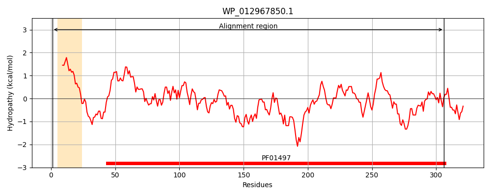
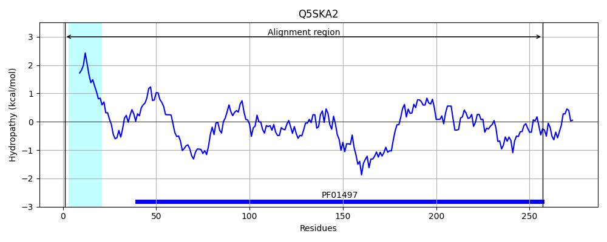
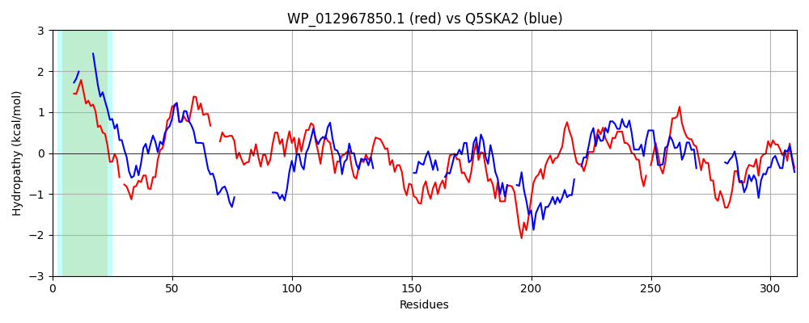

Hit Accession: Q5SKA2
Hit TCID: 3.A.1.14.26
Hit Description: gnl|BL_ORD_ID|14483 gnl|TC-DB|Q5SKA2|3.A.1.14.26 Iron ABC transporter, substrate-binding protein OS=Thermus thermophilus (strain HB8 / ATCC 27634 / DSM 579) OX=300852 GN=TTHA0746 PE=4 SV=1
Mach Len: 311
e:0.000000
Query TMS Count : 1
Hit TMS Count: 1
TMS-Overlap Score: 0.850000
Predicted Substrates:CHEBI:17439;cyanocob(III)alamin
BLAST Alignment:
Score: 149 , Bit scores: 62 bits, E-value: 5.1e-11, Alignment length: 311, Percentage identity: 23
Query: 1 MKKVLCALGLMFTAVSSALATTYPLTIEN-CGYQETFTRPPERVVALGQNTVEILLLLGLQKQVVAS---AFWPTSVLPQLAEQNAKIKTLTVEIPSLESVLAQNPDFVPAQLPLLLGPESKVAKREDLATVGVNSYVSPGMCATKKATGDMYGSRQKLWDMTWLYQEISDFARIFNVEDRGQALIADFKKREADLRQEFGKSKKDLSFVFWFSSASPSADAYVGGKNSASGFIASVLGGHNAITSETE-WPTVSWESIIAANPDVIVVSSLDRNRWALDKAEEKIKFLKSDPAVSQLEAVKKGHIVVMDG 306
MK++L AL ++ ALA +PLT+++ G T PP+R+V + + E + LG ++VA+ + WP SV +P + NP+ + + P L+ E L G+ +Y R + ++ +++ + R+ +E + L+A +K ++ QE ++ K S + P+ Y G S G + S G N + E +P +S E ++ +P+VIV + ++ ++S P S+++AV+ G I V G
Sbjct: 1 MKRLLAALSVLL-----ALAFAFPLTLQDDLGRTVTLQAPPKRIVTMLPSVTETVCALGACDRIVATDDYSDWPESV---------------KRLPKAGGLYNPNPELIVSLKPDLVLVSKYGRLYETLERAGLT----------------VYAVRTETYED--IFKTVRTLGRLLGLEAEAERLVAQIQK---EVYQEEARAAKARSRPRVYYEIDPT--PYTVGPESFIGVLISKARGVNIVPKELGLFPKISPEFVVEKDPEVIVAT-----------YPNALETIRSRPGWSRIQAVRTGRICVYTG 257 | Protein Hydropathy Plots: |
|---|
|  |  |
Pairwise Alignment-Hydropathy Plot:
|
|---|
|  |